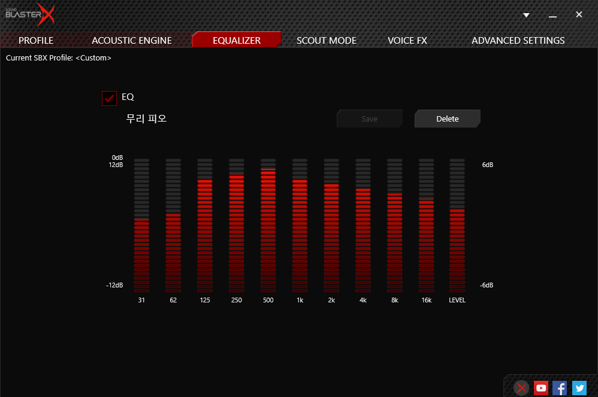
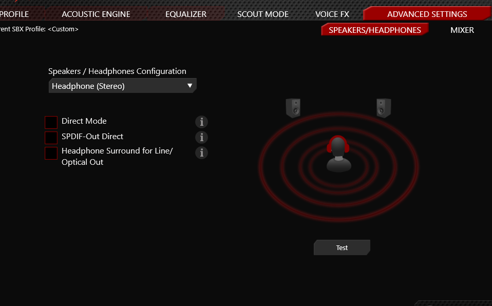

서바이버 티어 무리의 실사용 세팅 그대로 — 발소리 최적화 6단계
G5를 USB로 PC에 연결하고 이어폰은 앞면 헤드폰 단자에 꽂습니다. 구글에서 "Creative Sound BlasterX G5 support" 검색 → 공식 지원페이지에서 BlasterX Acoustic Engine Pro를 설치하세요. 설치 후 윈도우 소리 설정에서 기본 재생 장치를 Sound Blaster G5로 바꿉니다.
본체의 H/L 게인 스위치를 반드시 L로 두세요. NX7 MK4처럼 감도 높은 이어폰은 H로 두면 "치지직" 화이트노이즈가 낍니다. 소리가 작다고 H로 올리지 말고, 볼륨은 노브와 윈도우 볼륨으로 조절하세요.
PROFILE 탭에서 Profile 1 <Custom> 선택 후 Surround · Crystalizer · Bass · Smart Volume · Dialog Plus를 전부 Off. 음향을 뿌려주고 부풀리는 효과들은 발소리의 방향감을 오히려 뭉갭니다. 배그는 원음이 정답입니다.
EQUALIZER 탭에서 EQ 체크 후 아래 사진의 막대 모양 그대로 맞춰주세요. 핵심은 발소리 대역(125Hz~1kHz)을 올리고 저음 웅장감(31·62Hz)을 눌러 총성·차량음에 발소리가 묻히지 않게 하는 커브입니다. 다 맞추면 이름을 넣고 Save.

SCOUT MODE와 VOICE FX 탭 모두 체크 해제. 스카우트모드는 특정 소리를 인위적으로 증폭해 멀리서도 들리게 해주지만, 그만큼 거리감이 깨져서 "가까운 줄 알았는데 멀리 있는" 오판이 생깁니다.
ADVANCED SETTINGS → Speakers/Headphones에서 Headphone (Stereo) 선택. 아래 Direct Mode · SPDIF-Out Direct · Headphone Surround 체크박스 3개는 전부 해제합니다.

가상 서라운드·크리스탈라이저 같은 후처리 효과는 음악·영화용입니다. 배그의 발소리 방향은 게임 엔진이 이미 스테레오로 정확히 계산해 주는데, 후처리가 끼면 그 정보가 왜곡됩니다. 원음(스테레오) + 발소리 대역 EQ 부스트가 위치 파악에 가장 유리한 조합이고, 실제 대회·상위권 유저 대부분이 같은 방식을 씁니다.
같은 소리를 듣고도 위치를 아는 사람과 모르는 사람의 차이는 훈련입니다.
서바이버 트레이너진의 1:1 레슨에서 사운드 플레이부터 잡아드립니다.